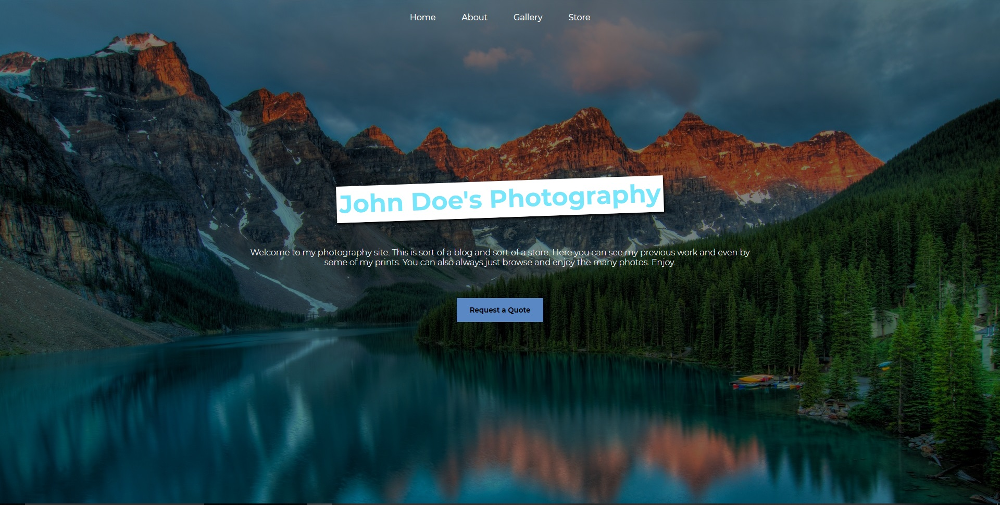

Projects
A few projects that I've worked on
Clout Chasers
Clout Chasers is a site created for an individual interested in buying likes for their Instagram page. This is a was to artificially enhance activity on a users page. Clout Chasers was constructed using HTML, CSS and JS.
Honey Dipped Spa
Honey Dipped is a spa site. On this site the user can view services offered and the most popular technians at the location. This site was constructed using HTML and CSS.
John Doe's Photography
John Doe Photography is a blog and a store. It showcases the artist photos as well as gives a convenient way to get prints of the photos. This site was created using HTML and CSS.